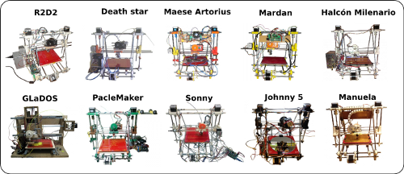

¡¡Ya somos 10 clones en Clone wars!!
Clon 1: R2D2
: Juan González / Andrés Prieto-Moreno. Universidad Politécnica de Madrid
Clon 2: Death Star:
Fernando Salceda. Madrid
Clon 3: Maese Artorius:
Arturo Vera. Universidad Carlos III de Madrid
Clon 4: Mardan:
Marco Estéban. Universidad Carlos III de Madrid
Clon 5:
Halcón Milenario: Carlos García. Universidad Autónoma de Madrid
Clon 6: GLaDOS:
Miguel Angel Herranz. Madrid
Clon 7: PacleMaker:
Pablo Clemente. Universidad Politécnica de Madrid
Clon 8: Sonny:
Daniel Gomez. Universidad Carlos III de Madrid
Clon 9: Johnny 5:
Miguel Anglel Berna. Alicante
Clon 10: Manuela:
Jose Luis del Olmo. Valladolid
El proyecto clone-wars comenzó hace casi un año, con
la impresión de las primeras piezas de R2.
Comenzamos con muchas dudas y sin saber muy bien si tendríamos éxito o no. Ahora, al ver que hay 10 clones,
la sensación de alegría es inmensa. Lo siguiente será reproducirnos y multiplicarnos!
Obijuan